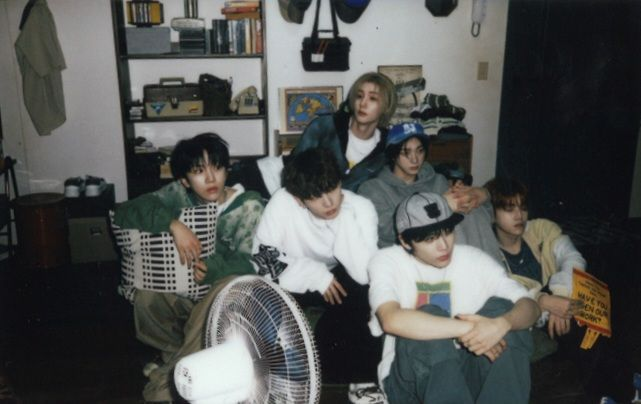
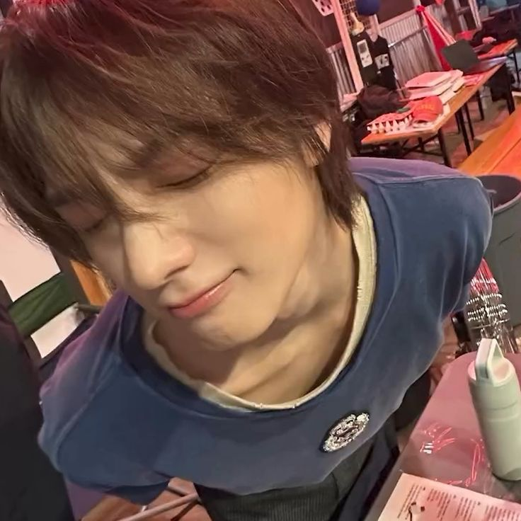
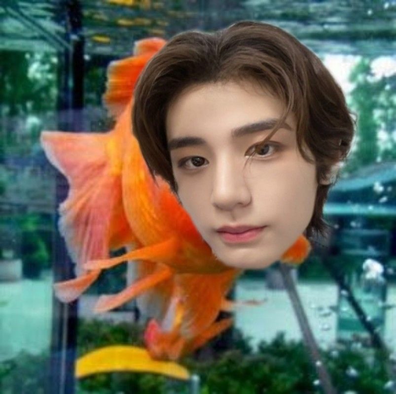

i love boynextdoor ☆ #lauv
boynextdoor (also known as bnd) is a 6 member boy group under the label hybe (specifically under zico, former member of blockb) i love their music because i believe that they have such a wide variety of music that you can listen to. some of my favorite songs are:
i really enjoy specifically the member sungho and leehan. sungho is the oldest of the group and is one of the main vocals. i also really like leehan because i think he has a really unique personality. (psttt he is a fish lover)
sungho
leehan
#more boynextdoor!some more bands that i enjoy and have the same style/vibe as bnd include: